OpenStack Grizzly Installation - Single Node
Create a VM
These are the following steps to create a VM
- Create a External Network
- Create a Subnet and Allocate Floating IP
- Create a Private Network
- Create a Private Subnet
- Create a Router
- Attach Public and Private Interfaces
- Create a Security Group
- Create a Keypair
- Launch an Instance
- Ping and SSH to an Instance
- Configure Floating IPs to Virtual Machines
Create a External Network
#quantum net-create public-net --router:external=True Created a new network: +---------------------------+--------------------------------------+ | Field | Value | +---------------------------+--------------------------------------+ | admin_state_up | True | | id | 21ea48fb-ee1e-46a4-b589-b3c2b359291d | | name | public-net | | provider:network_type | gre | | provider:physical_network | | | provider:segmentation_id | 1 | | router:external | True | | shared | False | | status | ACTIVE | | subnets | | | tenant_id | 2b942273713741b1868eb86b11e08df8 | +---------------------------+--------------------------------------+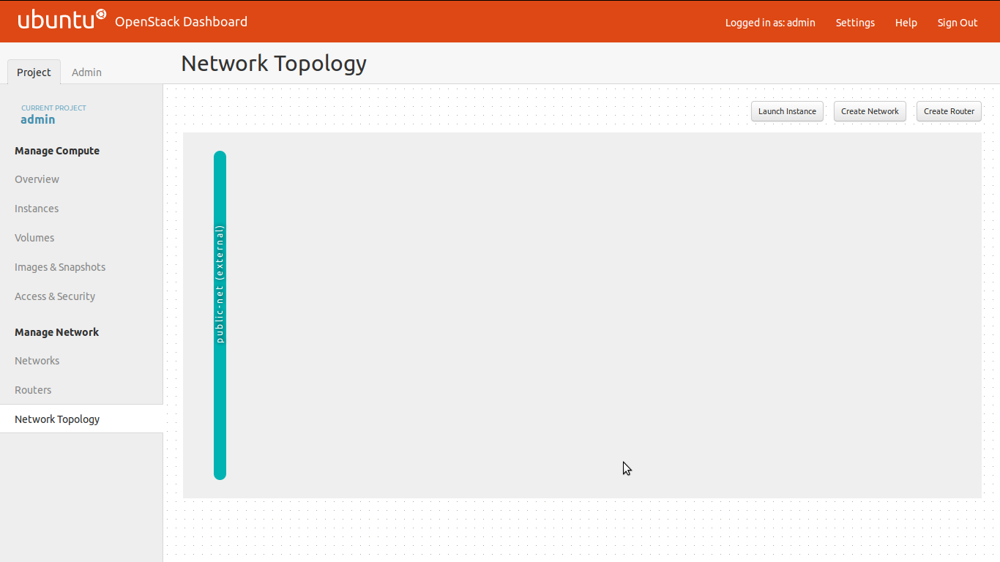
Create a Subnet and Allocate Floating IP
Create subnet and allocate floating ip range for public-network:
Floating IP network (Publicly routable IP Range): This network is utilized for providing Public IP accessibility to selected cloud instances. tenant-id can be obtained by using the command keystone tenant-list.
#quantum subnet-create --tenant-id 2b942273713741b1868eb86b11e08df8 --name public-net-subnet01 --gateway 10.42.0.1 public-net 10.42.0.0/24 --enable_dhcp False --allocation-pool start=10.42.0.74,end=10.42.0.254
Created a new subnet:
+------------------+----------------------------------------------+
| Field | Value |
+------------------+----------------------------------------------+
| allocation_pools | {"start": "10.42.0.2", "end": "10.42.0.254"} |
| cidr | 10.42.0.0/24 |
| dns_nameservers | |
| enable_dhcp | False |
| gateway_ip | 10.42.0.1 |
| host_routes | |
| id | d5b8d223-c2b2-4b87-ae7c-187d37f8b762 |
| ip_version | 4 |
| name | public-net-subnet01 |
| network_id | 21ea48fb-ee1e-46a4-b589-b3c2b359291d |
| tenant_id | 2b942273713741b1868eb86b11e08df8 |
+------------------+----------------------------------------------+
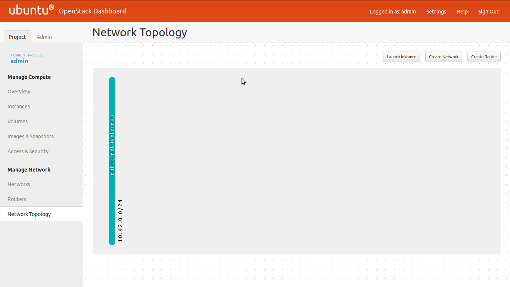
Create a Private Network
#quantum net-create private-net Created a new network: +---------------------------+--------------------------------------+ | Field | Value | +---------------------------+--------------------------------------+ | admin_state_up | True | | id | 428dbfc9-73e1-4e8d-88e2-471a3e91f6a6 | | name | private-net | | provider:network_type | gre | | provider:physical_network | | | provider:segmentation_id | 2 | | router:external | False | | shared | False | | status | ACTIVE | | subnets | | | tenant_id | 2b942273713741b1868eb86b11e08df8 | +---------------------------+--------------------------------------+

Create a Private Subnet
Attach subnet to private network:
#quantum subnet-create --name private-subnet private-net 10.0.0.0/24
Created a new subnet:
+------------------+--------------------------------------------+
| Field | Value |
+------------------+--------------------------------------------+
| allocation_pools | {"start": "10.0.0.2", "end": "10.0.0.254"} |
| cidr | 10.0.0.0/24 |
| dns_nameservers | |
| enable_dhcp | True |
| gateway_ip | 10.0.0.1 |
| host_routes | |
| id | 5421a4eb-5b4b-4c3e-9b56-6bb721f99653 |
| ip_version | 4 |
| name | private-subnet |
| network_id | 428dbfc9-73e1-4e8d-88e2-471a3e91f6a6 |
| tenant_id | 2b942273713741b1868eb86b11e08df8 |
+------------------+--------------------------------------------+
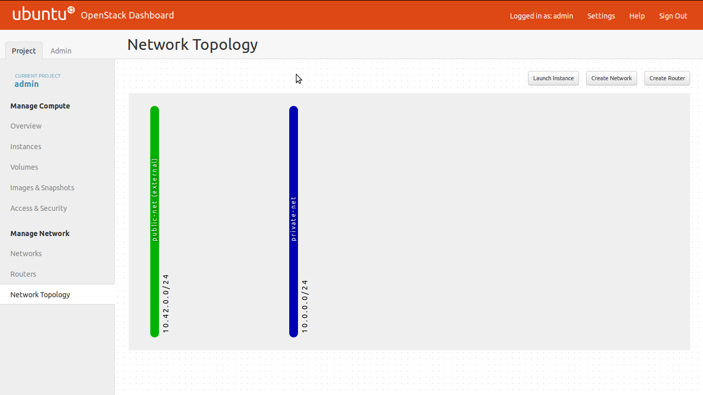
Create a Router
#quantum router-create router1 Created a new router: +-----------------------+--------------------------------------+ | Field | Value | +-----------------------+--------------------------------------+ | admin_state_up | True | | external_gateway_info | | | id | ca972d3b-788e-4e16-8552-dd335575c5c0 | | name | router1 | | status | ACTIVE | | tenant_id | 2b942273713741b1868eb86b11e08df8 | +-----------------------+--------------------------------------+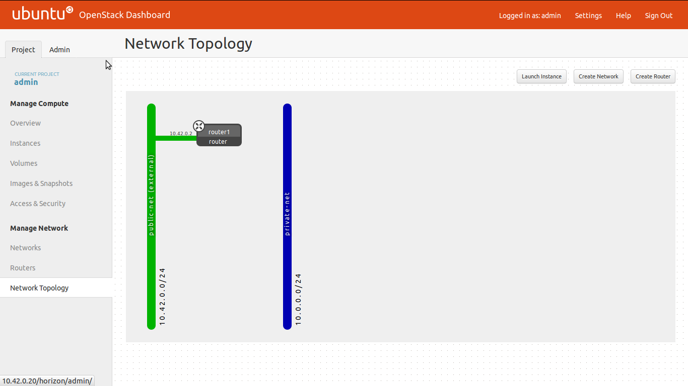
Attach Public and Private Interfaces
-
Uplink router to public network:
#quantum router-gateway-set router1 public-net
-
Attach private network to router:
#quantum router-interface-add router1 private-subnet
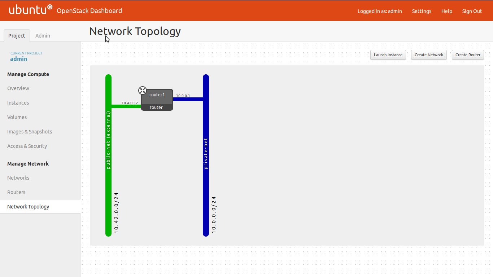
Create a Security Group
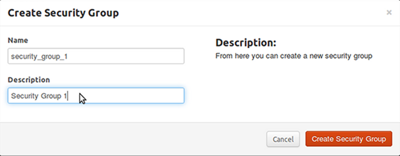-
Access and Security
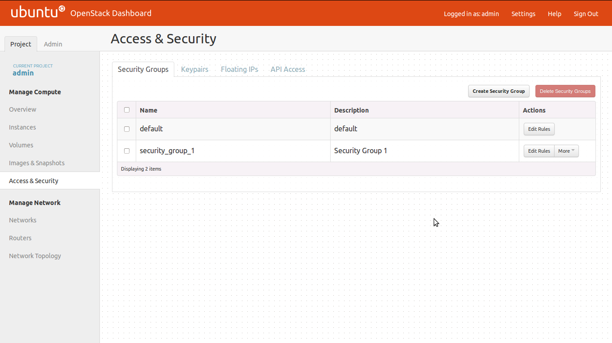 -
Edit Security Group Rules
Add TCP and ICMP Rules:
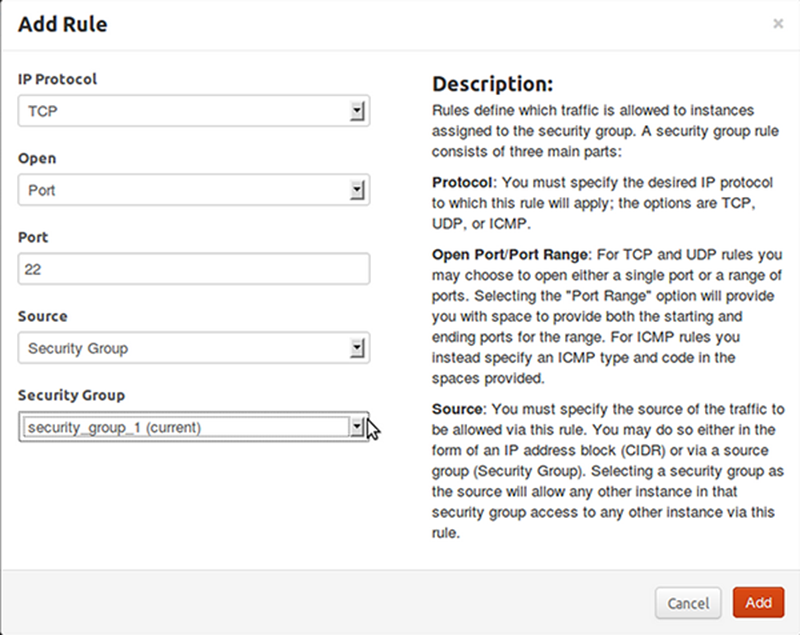
Create a Keypair
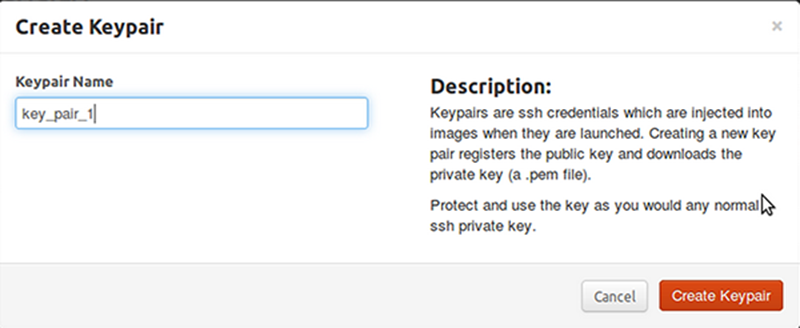
Launch an Instance
Note: Create a VM using the Horizon dashboard
-
Before Creating VM

-
Enter Instance Details
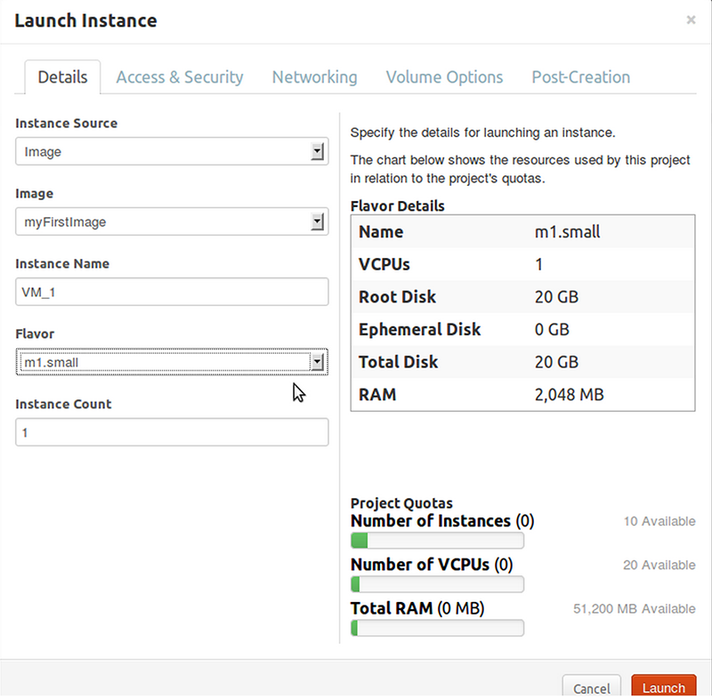 -
Select Keypair and Security Group
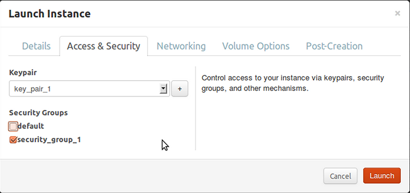 Select Instance Network
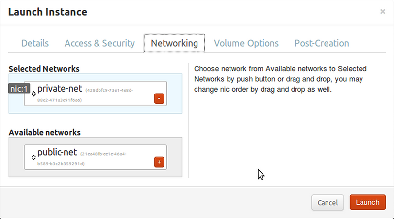
After selecting a network click-on -
My first VM
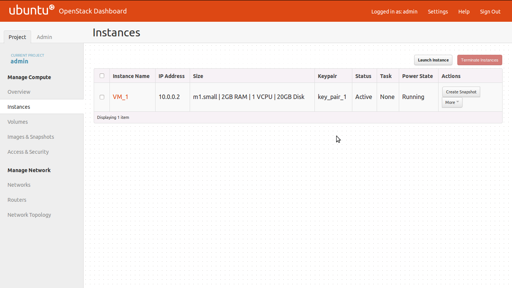 Network Topology
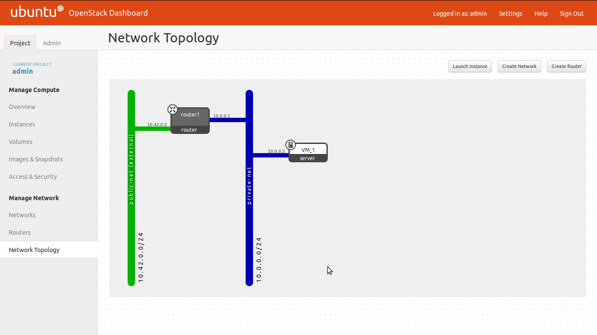-
To Show net-list
#ip netns list qrouter-ca972d3b-788e-4e16-8552-dd335575c5c0
#ip netns exec qrouter-ca972d3b-788e-4e16-8552-dd335575c5c0 ip addr list 10: lo: <LOOPBACK,UP,LOWER_UP> mtu 16436 qdisc noqueue state UNKNOWN link/loopback 00:00:00:00:00:00 brd 00:00:00:00:00:00 inet 127.0.0.1/8 scope host lo inet6 ::1/128 scope host valid_lft forever preferred_lft forever 11: qg-e045e129-e0: <BROADCAST,MULTICAST,UP,LOWER_UP> mtu 1500 qdisc noqueue state UNKNOWN link/ether fa:16:3e:23:30:ef brd ff:ff:ff:ff:ff:ff inet 10.42.0.2/24 brd 10.42.0.255 scope global qg-e045e129-e0 inet6 fe80::f816:3eff:fe23:30ef/64 scope link valid_lft forever preferred_lft forever 12: qr-696c2816-7e: <BROADCAST,MULTICAST,UP,LOWER_UP> mtu 1500 qdisc noqueue state UNKNOWN link/ether fa:16:3e:c8:2f:1a brd ff:ff:ff:ff:ff:ff inet 10.0.0.1/24 brd 10.0.0.255 scope global qr-696c2816-7e inet6 fe80::f816:3eff:fec8:2f1a/64 scope link valid_lft forever preferred_lft forever#ip netns exec qrouter-ca972d3b-788e-4e16-8552-dd335575c5c0 ping 10.0.0.2
-
To do ssh into VM, do the follwing
#ip netns exec qrouter-ca972d3b-788e-4e16-8552-dd335575c5c0 ssh 10.0.0.2 -l cirros userid: cirros password: cubswin:) or #ssh 10.0.0.2 -l cirros The authenticity of host '10.0.0.2 (10.0.0.2)' can't be established. RSA key fingerprint is da:f6:87:1a:3f:b6:e9:a4:92:8b:ca:a8:b8:d5:28:0d. Are you sure you want to continue connecting (yes/no)? yes Warning: Permanently added '10.0.0.2' (RSA) to the list of known hosts. #cirros@10.0.0.2's password: cubswin:) $ -
Allocate Floating IP
-
Associate Floating IP to Instance
-
VM1 is assigned with floating ip 10.42.0.75
Ping the virtual machine vm1 from outside network using the assigned floating ip.
#ping 10.42.0.75 #ssh cirros@192.168.0.75
Launch to create a VM.